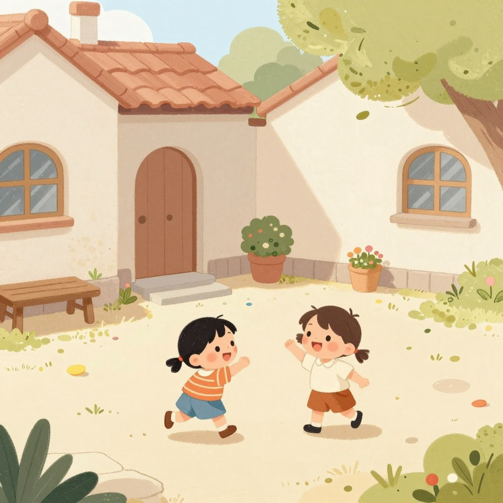
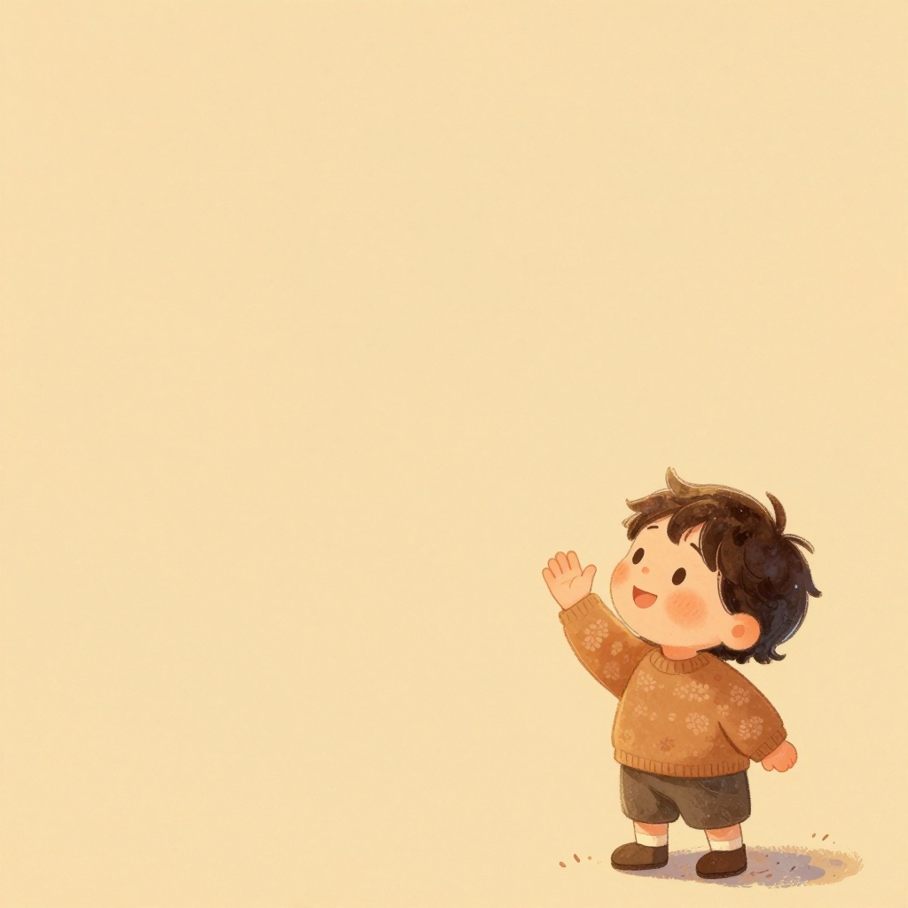
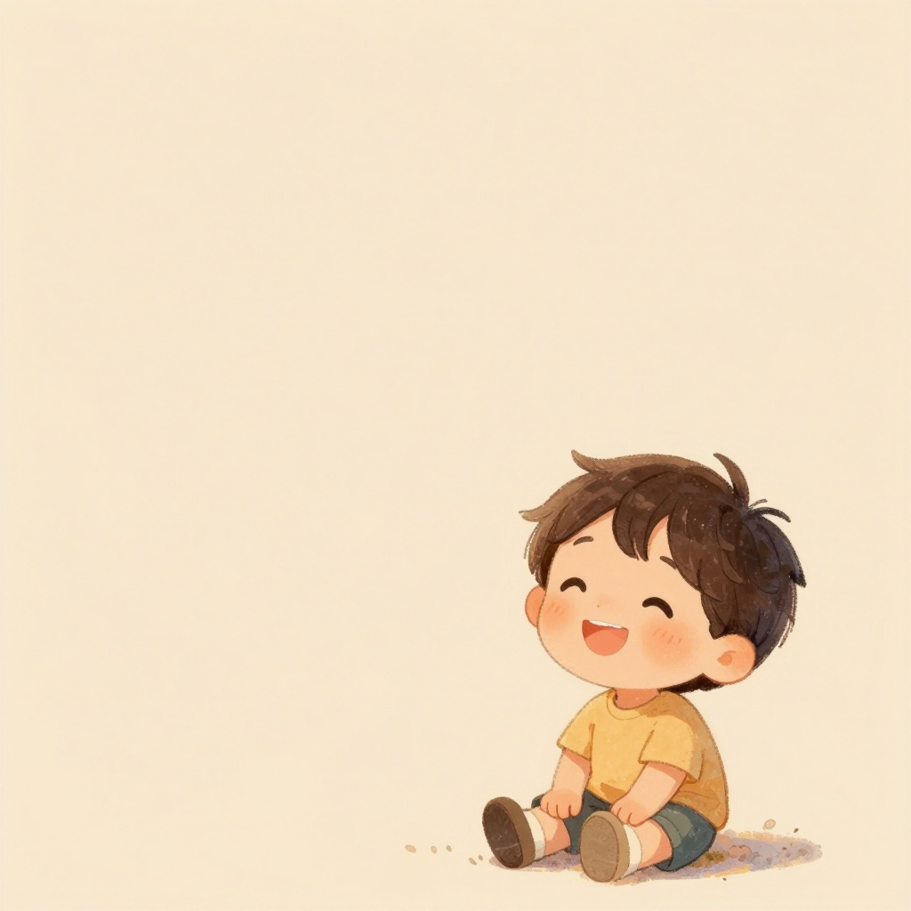
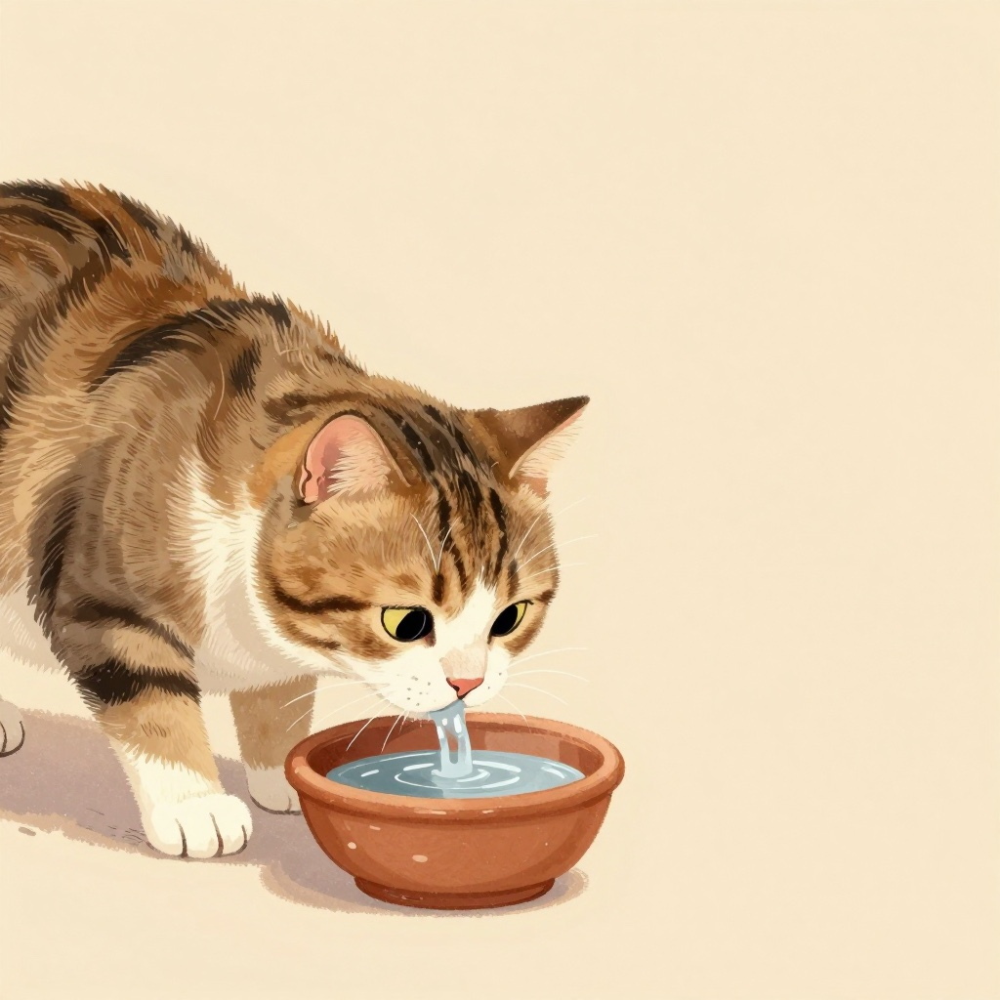
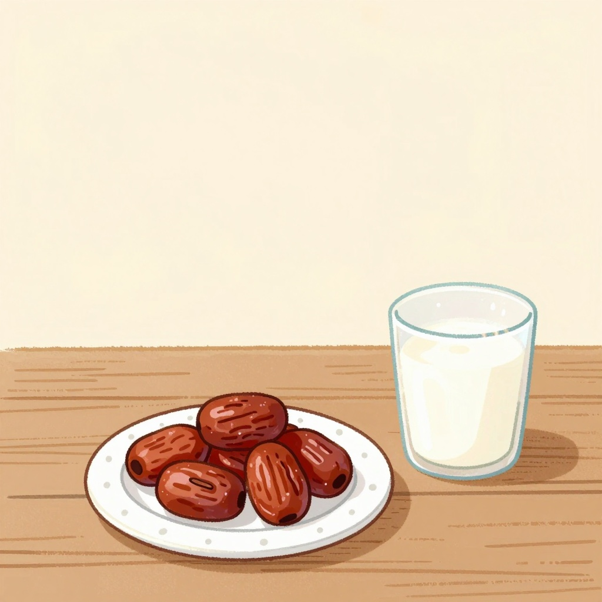
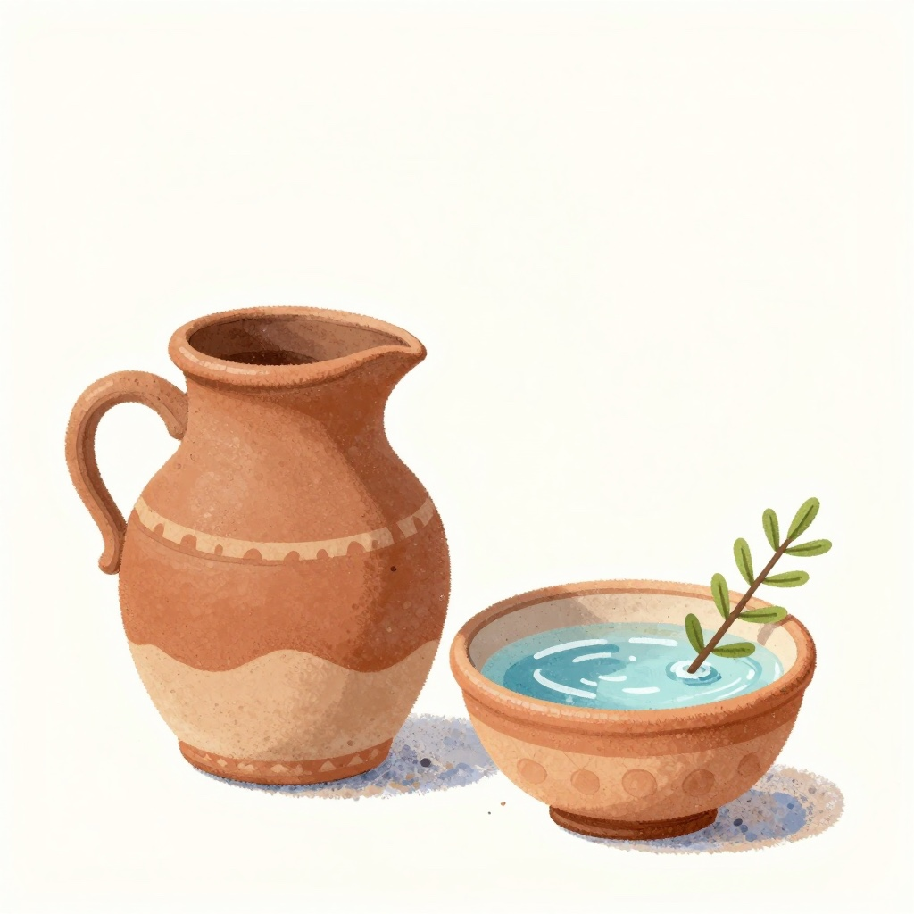
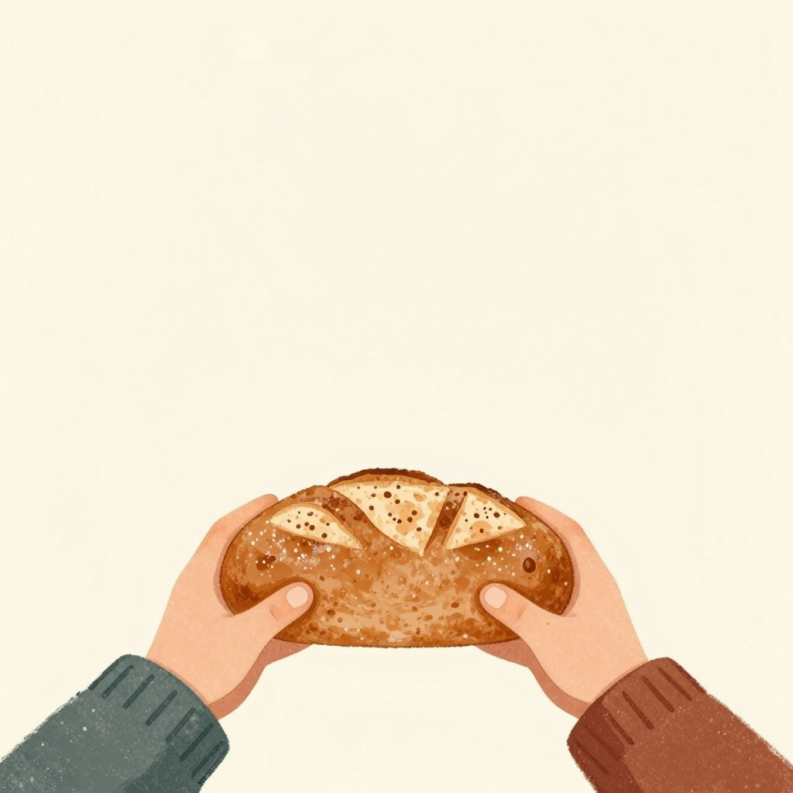
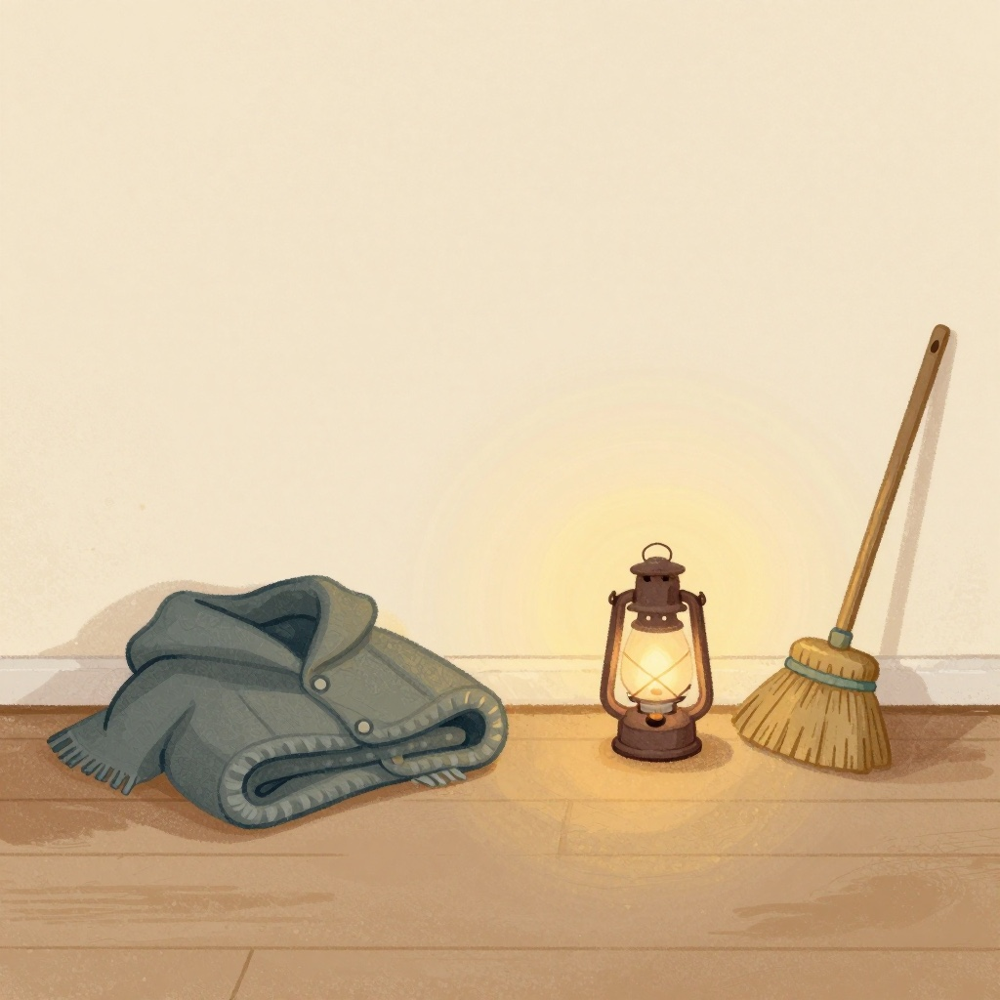
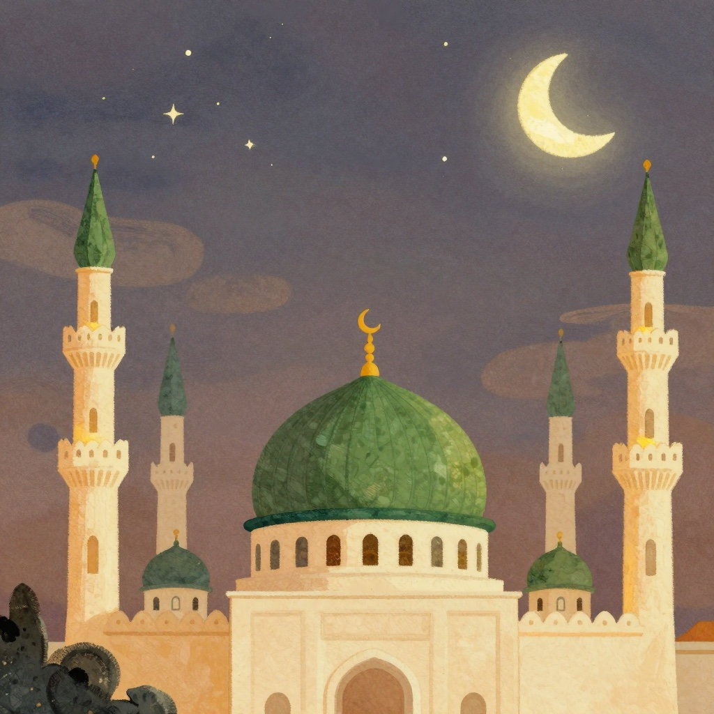

Peace be upon him
Eight small things, and all of them easy to copy.
تمن حاجات صغيّرة، وكلّها سهل نعملها زيّه.

He stopped for them in the street. He let them climb on his back. He never once told a child to go away.
Peace be upon him.
كان بيقف لهم في الطريق. ويسيبهم يطلعوا على ضهره. وعمره ما قال لطفل: ابعد.
صلّى اللهُ عليه وسلّم.

To the old and the young, to people he knew and people he did not. He liked to be the one who said it first.
Peace be upon him.
على الكبير والصغير، وعلى اللي يعرفه واللي ميعرفوش. وكان بيحب يكون هو اللي يبدأ بالسلام.
صلّى اللهُ عليه وسلّم.

People said they had never met anyone who smiled more. A smile costs nothing, and it still counts as a good deed.
Peace be upon him.
صحابه قالوا: عمرنا ما شفنا حد بيبتسم أكتر منه. والابتسامة مبتكلّفش حاجة، ومع كده بتتكتب حسنة.
صلّى اللهُ عليه وسلّم.

A cat could drink from the same water he was about to use, and he would let her finish, and say she was not dirty at all.
Peace be upon him.
القطّة كانت بتشرب من الميّة اللي كان هيتوضّى منها، فيسيبها تكمّل، ويقول إنها مش نجسة.
صلّى اللهُ عليه وسلّم.

Plain food, and not very much of it. A few dates and a cup of milk, and he was glad.
Peace be upon him.
أكل بسيط، وحاجة قليلة. شويّة تمرات وكوباية لبن، ويرضى ويحمد ربّنا.
صلّى اللهُ عليه وسلّم.

Clean hands, clean clothes, clean teeth, clean water. He cleaned his teeth with a siwak — a soft green twig.
Peace be upon him.
إيدين نضيفة، وهدوم نضيفة، وسنان نضيفة، وميّة نضيفة. وكان بينضّف سنانه بالسواك، عود أخضر طري.
صلّى اللهُ عليه وسلّم.

If there was food, it was shared. If there was little, it was shared more carefully. Nobody at his door was sent away empty.
Peace be upon him.
لو فيه أكل يتقسم. ولو قليل يتقسم بعناية أكتر. ومحدّش رجع من عنده إيده فاضية.
صلّى اللهُ عليه وسلّم.

He mended his own sandals. He swept. He sat with his family, and he was easy to live with.
Peace be upon him.
كان بيصلّح نعله بإيده. ويكنس البيت. ويقعد مع أهله، وكان طيّب وحنيّن معاهم.
صلّى اللهُ عليه وسلّم.

Kind to children, kind to animals, kind to whoever was hungry. When we hear his name, we say one thing.
Peace be upon him. Goodnight, Yusuf.
حنيّن على الأطفال، حنيّن على الحيوان، حنيّن على كل جعان. ولمّا بنسمع اسمه بنقول كلمة واحدة.
صلّى اللهُ عليه وسلّم. تصبح على خير، يا يوسف.